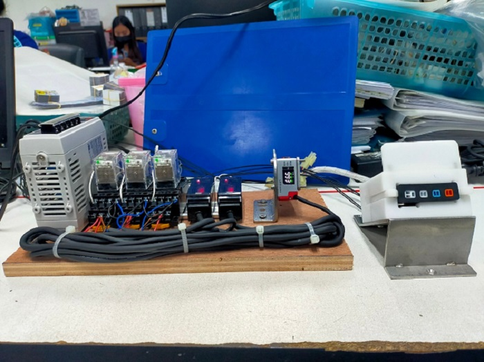
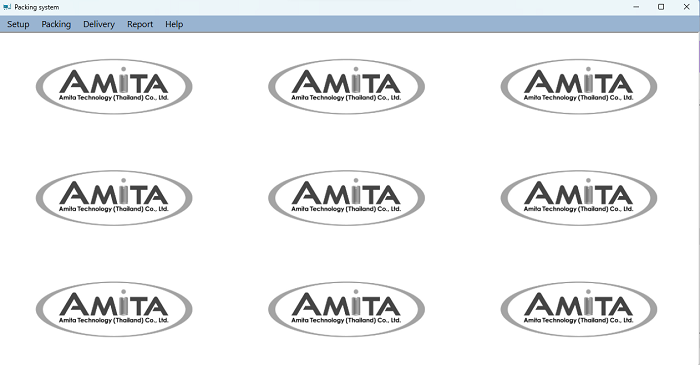

Projects
Color sensor
Establishment: SEWT Kanchanaburi Company Limited

- The project on color sensors (Sensor Color Model HW- 531)
was created to check colors. which is checked by using Spectral sensors for detecting the color
of workpieces in the production quality control process. Created with the following objectives: To help reduce the company's
costs in bringingAccess expensive electronic devices or sensors To check the color detection of the device, the color detector
(Sensor Color model HW- 531) will process with Arduino R3 and receive the Input value through the sensor color model HW- 531 Displayed with LED lights
when checking. Color values obtained from sensor color model HW- 531
Report (Click below)
Module Packing system At MMC
Establishment: Amita Technology (Thailand) Co., Ltd

- Technology Thailand Module assembly line at MMC is a manual production line. Production and Production planning requests to MES development Packing system for support production
process on capture packing data and delivery data in the database. On the design system for support collection packing and delivery to the database, MES team develop the application by C# .net
and collected data at the Wan Mung database system.
- The Manufacturing Execution System department was assigned to create an Application Module Packing system using Microsoft visual studio 2022
to write code and SQL Server to store data. The knowledge learned will be used to achieve maximum efficiency and to achieve the goals of
the project. As a result , the company can reduce working time to less.
Report & Present (Click below)
Home Contact